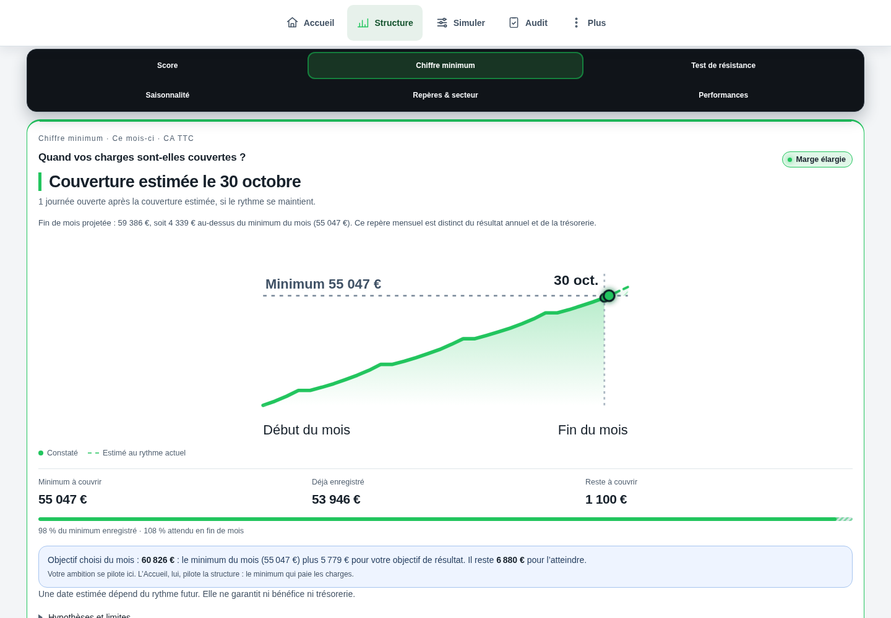

Bpifrance Création · seuil de rentabilité (septembre 2026)
Définitions, formule et absence de seuil universel. Consulté le 9 octobre 2026.
Cette référence ne valide pas les données de votre établissement.Comprendre le sujet
Il n’existe ni chiffre minimum ni date de point mort universels pour un restaurant, un café ou un hôtel.
Il n’existe ni chiffre minimum ni date de point mort universels pour un restaurant, un café ou un hôtel. Calculez votre seuil, situez sa couverture dans votre calendrier réel, puis mesurez la réserve face aux imprévus. Atteindre le minimum signifie l’équilibre du périmètre calculé ; cela ne signifie pas encore être confortable.
LES POINTS QUI CHANGENT LA LECTURE
Des repères à appliquer dans votre établissement. Le détail reste accessible, sans perdre le fil.
Le seuil de rentabilité est un montant de chiffre d’affaires. Le point mort en est la traduction en durée ou en date. Pour une lecture immédiate, « Chiffre minimum à réaliser » explique le montant et « Date de couverture des charges » explique le calendrier. Précisez toujours : mois, saison ou exercice ; réalisé ou estimé ; HT ou TTC.
La règle de base est : seuil HT = charges fixes de la période ÷ taux de marge sur coûts variables. Ce taux vaut (CA HT − coûts variables) ÷ CA HT. À 65 %, utilisez 0,65 dans la division. Au seuil, le résultat du modèle est nul. Un taux nul ou négatif ne permet pas de financer des charges fixes positives par davantage de ventes identiques.
Le bon objectif est propre à l’établissement : il doit couvrir les moyens engagés, le résultat recherché et une réserve adaptée au risque. Le 20 du mois ou le 15 novembre ne sont pas des normes CHR. Une date précoce peut être suivie d’une longue fermeture coûteuse ; une date tardive peut appartenir à une activité très saisonnière.
Le test utile combine trois questions : le volume nécessaire est-il réalisable, le scénario prudent garde-t-il un résultat acceptable et les échéances peuvent-elles être payées ? Un ratio moyen de branche ne répond pas à ces trois questions. Un café, une table gastronomique et un hôtel-restaurant n’ont ni les mêmes coûts, ni la même capacité, ni le même calendrier.
Recensez les matières consommées, emballages et commissions selon les ventes concernées. Pour la matière, rapprochez achats et variation de stock. Le taux matière seul ne représente pas tous les coûts variables. Le personnel permanent, les extras et l’énergie demandent une ventilation justifiée : leur classement ne peut pas être identique dans tous les établissements.
Incluez les coûts de rémunération du dirigeant relevant du périmètre, sans double compte. Distinguez amortissements, intérêts et remboursements de capital. En hôtel-restaurant, pondérez la contribution des chambres, petits-déjeuners, repas et boissons par leurs ventes ; si le mix change, le taux global et le seuil changent aussi. Une embauche par palier impose un nouveau scénario.
Sous hypothèse de ventes régulières et de contribution constante : durée théorique = seuil ÷ CA prévu × jours de la période. Si vous utilisez des jours ouverts, le résultat est un rang de jour ouvert, pas une date civile. Il faut le replacer dans le calendrier, avec fermetures et services disponibles.
Lorsque les ventes varient, cumulez la contribution de chaque service jusqu’à couvrir les charges fixes de toute la période. Pour une projection, ajoutez aux contributions constatées celles des services futurs, estimées avec leur propre activité et leur propre taux. Si la contribution est stable, suivre le CA cumulé contre le seuil donne le même résultat.
Un établissement saisonnier doit financer aussi ses charges de fermeture. Ne divisez pas automatiquement le besoin annuel par douze mois actifs. Une couverture franchie peut être remise en question par des avoirs, des coûts nouveaux ou une révision des hypothèses : indiquez la date du calcul et sa base.
Deux jours calendaires ne valent pas deux jours ouverts ; deux gros services ne valent pas deux services creux. À activité uniforme, couvrir les charges au terme du 24e jour sur 26 jours ouverts laisse (2 ÷ 26) × 100 = 7,69 % de réserve de CA. Avec 65 % de contribution, cela représente 5 % de résultat du modèle rapporté au CA. Ce sont des hypothèses fictives, pas un diagnostic universel.
Un jaune de vigilance peut donc être cohérent avec un résultat positif. Un orange peut signaler une projection très fragile. Mais la seule mention « deux jours » ne justifie pas une couleur identique partout : montants, calendrier, incertitude et objectif doivent expliquer le statut. Elle ne démontre ni insolvabilité ni confort.
Marge de sécurité en euros = CA prévu − seuil. Indice de sécurité = (CA prévu − seuil) ÷ CA prévu. Avec 50 000 € de CA et un seuil de 40 000 €, la réserve est de 10 000 €, soit 20 % du CA. Ce n’est ni 25 % de sécurité, ni 20 % de bénéfice.
Cette réserve décrit la baisse de ventes supportable avant l’équilibre uniquement si les prix, le taux de contribution et le fixe restent compatibles avec le scénario. Testez séparément une baisse de fréquentation, une hausse matière et leur combinaison. Un indice négatif indique un déficit du modèle ; sans CA positif, le pourcentage n’est pas interprétable.
Pour un résultat cible en euros : CA nécessaire = (charges fixes + résultat cible) ÷ taux de contribution. Pour un résultat cible rapporté au CA : CA nécessaire = charges fixes ÷ (taux de contribution − taux de résultat cible). Le taux cible doit être inférieur au taux de contribution ; tous les postes doivent rester dans le même périmètre.
Exemple fictif : avec 26 000 € de fixe et 65 % de contribution, viser 8 % de résultat du modèle demande environ 45 614 € HT, contre 40 000 € au seul équilibre. Les 8 % sont un choix de simulation, pas une recommandation universelle. Aucun montant ne doit être appelé « bénéfice net » si l’impôt ou d’autres charges sont absents.
Une projection annuelle de 50 000 € avant impôt ne garantit pas la solidité de chaque mois. Des mois forts peuvent compenser des mois faibles. Comparez le mois à son budget saisonnier et l’année à son propre seuil ; ne transposez pas mécaniquement la couleur annuelle au mois.
Le résultat n’est pas le solde bancaire. Le remboursement du capital, les investissements, la TVA et les dates de règlement peuvent créer un besoin de trésorerie malgré un résultat positif. La date de couverture des charges et la capacité de payer les prochaines échéances doivent rester deux lectures distinctes.
Proposition de lecture, et non barème officiel CHR : rouge si le minimum de période n’est pas couvert dans la projection centrale ; orange s’il est couvert mais qu’un scénario prudent choisi le fait perdre ; jaune si ce scénario tient mais que l’objectif de résultat n’est pas atteint ; vert si minimum, objectif et résistance au scénario retenu sont réunis.
Les hypothèses du test doivent être visibles : par exemple −10 % de ventes est un scénario choisi, pas une norme. Une donnée manquante ou trop incertaine appelle « À confirmer », pas un vert automatique. Le risque de trésorerie conserve son alerte propre. Cette proposition éditoriale ne signifie pas que le moteur de l’application a été modifié.
Le suivi « 100 % du minimum à date atteint » peut rester vert pour indiquer le respect du rythme. Il ne doit pas être confondu avec le statut « marge de sécurité confortable ». Affichez le montant déjà réalisé, la projection distincte, la réserve et le motif de couleur ; séparez également le mois et l’année.
LE LABORATOIRE
Modifiez les données, observez le résultat, puis vérifiez ce que le calcul permet de conclure.
UN SCÉNARIO, JUSQU’AU BOUT
Le calcul, jusqu’au bout
Contribution et fixe constants, 26 jours comparables : couverture pendant le 21e jour ouvert. Le besoin moyen de 61,54 couverts se traduit par 62 couverts entiers si chaque jour doit couvrir cette moyenne. Les 6 500 € sont le résultat du périmètre retenu, pas automatiquement le bénéfice net ou la trésorerie disponible.
Exemple fictif · hypothèses modifiables
| Seuil HT de la période | 40 000 € |
|---|---|
| Minimum moyen par jour ouvert | 1 538,46 € |
| Couverts moyens nécessaires à 25 € HT | 61,54 couverts |
| Résultat du modèle à 50 000 € HT | 6 500 € |
| Sécurité à 50 000 € HT | 20 % |
| Rang théorique de couverture sur 26 jours | 20,8 jours ouverts |
| CA HT pour une cible choisie de 8 % | 45 614,04 € |
Les montants sont arrondis pour la lecture.
Les calculs gardent leur précision.
Non. La formule est commune, mais le montant et la date dépendent des charges, de la contribution, du volume et de la saisonnalité. Il n’existe pas ici de date idéale imposée à tous les CHR.
Cela signifie seulement que les charges du périmètre seraient couvertes à cette date. Regardez les services restant ouverts, leur contribution attendue, le résultat et les risques. Deux jours de réserve ne prouvent pas un confort économique.
« Chiffre minimum à réaliser » pour le montant, avec « seuil de rentabilité » en explication ; « Date de couverture des charges » pour la date, avec la mention estimée tant qu’elle dépend de ventes futures.
Pour une activité assujettie avec TVA récupérable, le calcul économique part du HT. Un repère commercial TTC exige les taux réellement applicables au mix de ventes. Ne comparez pas un CA TTC à un seuil HT.
Aucun pourcentage unique n’est démontré pour tous les CHR. Choisissez des scénarios de risque documentés et un objectif de résultat, puis vérifiez la capacité et la trésorerie. Les pourcentages d’exemple ne sont pas des normes.
Oui. Les périodes répondent à des budgets et des risques distincts. Une année positive peut aussi connaître un besoin de trésorerie ; le résultat annuel ne remplace pas le suivi mensuel.
Définitions, formule et absence de seuil universel. Consulté le 9 octobre 2026.
Cette référence ne valide pas les données de votre établissement.Classement des charges et contribution. Consulté le 9 octobre 2026.
Cette référence ne valide pas les données de votre établissement.Matière consommée, seuil et suivi de trésorerie. Les repères de ratio ne sont pas des normes universelles. Consulté le 9 octobre 2026.
Cette référence ne valide pas les données de votre établissement.Réponse professionnelle de 2016 reprenant une méthode de 2010 ; utilisée pour la méthode, pas pour des ratios actuels. Consulté le 9 octobre 2026.
Cette référence ne valide pas les données de votre établissement.Distinction intérêts / remboursement de capital. Consulté le 9 octobre 2026.
Cette référence ne valide pas les données de votre établissement.Support pédagogique : marge et indice de sécurité. Les données de cas ne sont pas des objectifs de branche. Consulté le 9 octobre 2026.
Cette référence ne valide pas les données de votre établissement.Relevez vos coûts, votre calendrier et votre contribution par activité. Calculez le minimum, ajoutez votre objectif de résultat, puis rejouez un scénario prudent et le calendrier des paiements.
DANS L’APPLICATION VERDICT

Couverture du minimum du mois dans la démonstration fictive Brasserie Collet : CA TTC et date de couverture estimée au rythme enregistré.
Voir l’écran en grandMinimum à couvrir : 55 047 €
Déjà enregistré : 53 946 €
Reste à couvrir : 1 100 €
La capture illustre la couverture du mois dans le modèle ; elle ne constitue pas un seuil annuel universel.
LES CHIFFRES NE VIVENT PAS SÉPARÉMENT.
Ventes, carte, inventaire : découvrez la lecture proposée par Verdict, avec vos données et vos hypothèses.